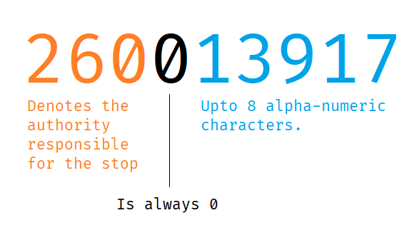

ATCO Codes
A stop's ATCO code uniquely identifies the stop. It is made up of three parts as below:

The ATCO area code (the first three digits) is used in the naptan.get_area_stop()
function. To find the code for a specific authority or region use the table below,
or use the naptan.ATCO_CODES variable. For more detail see
"Get stops within an area" and
"View and use atco codes".
Lookup table
Below you will find, the ATCO code for each authority or area, alongside their corresponding region and country codes.
Example
Leicestershire has a code of '260' and is in the 'EM' region
Tip
The table below can be sorted -- click on a column header.
| Code | Area | Region | Country |
|---|---|---|---|
| 639 | Aberdeen | S | Sct |
| 630 | Aberdeenshire | S | Sct |
| 649 | Angus | S | Sct |
| 607 | Argyll & Bute | S | Sct |
| 018 | Bath & North East Somerset | SW | Eng |
| 020 | Bedford | SE | Eng |
| 258 | Blackburn with Darwen | NW | Eng |
| 259 | Blackpool | NW | Eng |
| 532 | Blaenau Gwent | W | Wal |
| 129 | Bournemouth | SW | Eng |
| 038 | Bracknell Forest | SE | Eng |
| 551 | Bridgend | W | Wal |
| 149 | Brighton and Hove | SE | Eng |
| 010 | Bristol | SW | Eng |
| 040 | Buckinghamshire | SE | Eng |
| 554 | Caerphilly | W | Wal |
| 050 | Cambridgeshire | EA | Eng |
| 571 | Cardiff | W | Wal |
| 522 | Carmarthenshire | W | Wal |
| 021 | Central Bedfordshire | SE | Eng |
| 523 | Ceredigion | W | Wal |
| 060 | Cheshire East | NW | Eng |
| 061 | Cheshire West & Chester | NW | Eng |
| 668 | Clackmannanshire | S | Sct |
| 513 | Conwy | W | Wal |
| 080 | Cornwall | SW | Eng |
| 090 | Cumbria | NE | Eng |
| 076 | Darlington | NE | Eng |
| 511 | Denbighshire | W | Wal |
| 109 | Derby | EM | Eng |
| 100 | Derbyshire | EM | Eng |
| 110 | Devon | SW | Eng |
| 120 | Dorset | SW | Eng |
| 680 | Dumfries & Galloway | S | Sct |
| 640 | Dundee | S | Sct |
| 130 | Durham | NE | Eng |
| 618 | East Ayrshire | S | Sct |
| 611 | East Dunbartonshire | S | Sct |
| 627 | East Lothian | S | Sct |
| 612 | East Renfrewshire | S | Sct |
| 220 | East Riding of Yorkshire | Y | Eng |
| 140 | East Sussex | SE | Eng |
| 620 | Edinburgh | S | Sct |
| 150 | Essex | SE | Eng |
| 111 | Exeter | SW | Eng |
| 669 | Falkirk | S | Sct |
| 650 | Fife | S | Sct |
| 512 | Flintshire | W | Wal |
| 609 | Glasgow | S | Sct |
| 160 | Gloucestershire | SW | Eng |
| 490 | Greater London | L | Eng |
| 180 | Greater Manchester | NW | Eng |
| 540 | Gwynedd | W | Wal |
| 068 | Halton | NW | Eng |
| 190 | Hampshire | SW | Eng |
| 075 | Hartlepool | NE | Eng |
| 209 | Herefordshire | WM | Eng |
| 210 | Hertfordshire | SE | Eng |
| 670 | Highland | S | Sct |
| 613 | Inverclyde | S | Sct |
| 541 | Isle of Anglesey | W | Wal |
| 230 | Isle of Wight | SE | Eng |
| 240 | Kent | SE | Eng |
| 229 | Kingston upon Hull | Y | Eng |
| 250 | Lancashire | NW | Eng |
| 269 | Leicester | EM | Eng |
| 260 | Leicestershire | EM | Eng |
| 270 | Lincolnshire | EM | Eng |
| 029 | Luton | SE | Eng |
| 249 | Medway | SE | Eng |
| 280 | Merseyside | NW | Eng |
| 553 | Merthyr Tydfil | W | Wal |
| 079 | Middlesbrough | NE | Eng |
| 628 | Midlothian | S | Sct |
| 049 | Milton Keynes | SE | Eng |
| 533 | Monmouthshire | W | Wal |
| 638 | Moray | S | Sct |
| 920 | National - National Air | GB | GB |
| 900 | National - National Coach | GB | GB |
| 930 | National - National Ferry | GB | GB |
| 910 | National - National Rail | GB | GB |
| 910 | National - National Rail | GB | GB |
| 940 | National - National Tram | GB | GB |
| 582 | Neath Port Talbot | W | Wal |
| 531 | Newport | W | Wal |
| 290 | Norfolk | EA | Eng |
| 617 | North Ayrshire | S | Sct |
| 228 | North East Lincolnshire | EM | Eng |
| 616 | North Lanarkshire | S | Sct |
| 227 | North Lincolnshire | EM | Eng |
| 019 | North Somerset | SW | Eng |
| 291 | Norwich | SW | Eng |
| 320 | North Yorkshire | Y | Eng |
| 300 | Northamptonshire | EM | Eng |
| 310 | Northumberland | NE | Eng |
| 339 | Nottingham | EM | Eng |
| 330 | Nottinghamshire | EM | Eng |
| 602 | Orkney Islands | S | Sct |
| 340 | Oxfordshire | SE | Eng |
| 521 | Pembrokeshire | W | Wal |
| 648 | Perth & Kinross | S | Sct |
| 059 | Peterborough | EM | Eng |
| 118 | Plymouth | SW | Eng |
| 128 | Poole | SW | Eng |
| 199 | Portsmouth | SW | Eng |
| 561 | Powys | W | Wal |
| 039 | Reading | SE | Eng |
| 078 | Redcar & Cleveland | NE | Eng |
| 614 | Renfrewshire | S | Sct |
| 552 | Rhondda Cynon Taff | W | Wal |
| 268 | Rutland | EM | Eng |
| 690 | Scottish Borders | S | Sct |
| 603 | Shetland Islands | S | Sct |
| 350 | Shropshire | WM | Eng |
| 037 | Slough | SE | Eng |
| 360 | Somerset | SW | Eng |
| 619 | South Ayrshire | S | Sct |
| 017 | South Gloucestershire | SW | Eng |
| 615 | South Lanarkshire | S | Sct |
| 370 | South Yorkshire | Y | Eng |
| 198 | Southampton | SW | Eng |
| 158 | Southend-on-Sea | SE | Eng |
| 380 | Staffordshire | WM | Eng |
| 660 | Stirling | S | Sct |
| 077 | Stockton-on-Tees | NE | Eng |
| 389 | Stoke-on-Trent | WM | Eng |
| 390 | Suffolk | EA | Eng |
| 400 | Surrey | SE | Eng |
| 581 | Swansea | W | Wal |
| 468 | Swindon | SW | Eng |
| 359 | Telford & Wrekin | WM | Eng |
| 159 | Thurrock | SE | Eng |
| 119 | Torbay | SW | Eng |
| 534 | Torfaen | W | Wal |
| 410 | Tyne & Wear | NE | Eng |
| 572 | Vale of Glamorgan | W | Wal |
| 069 | Warrington | NW | Eng |
| 420 | Warwickshire | WM | Eng |
| 030 | West Berkshire | SE | Eng |
| 608 | West Dunbartonshire | S | Sct |
| 629 | West Lothian | S | Sct |
| 430 | West Midlands | WM | Eng |
| 440 | West Sussex | SE | Eng |
| 450 | West Yorkshire | Y | Eng |
| 601 | Western Isles | S | Sct |
| 460 | Wiltshire | SW | Eng |
| 036 | Windsor & Maidenhead | SE | Eng |
| 035 | Wokingham | SE | Eng |
| 200 | Worcestershire | WM | Eng |
| 514 | Wrexham | W | Wal |
| 329 | York | Y | Eng |